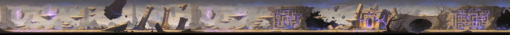
RUST ABYSS — 连环画故事
当世界碎裂，谁来缝合？
S.E. 0 之前——四个文明的故事
缝合师是跨位面存在。当世界碎片断裂、碰撞、互相吞噬时，缝合师用金色丝线将它们重新编织。他们没有名字，只有编号。每一次缝合都是一次创造——把矛盾的碎片编织成一个新世界。主角是第 [数据抹除] 号缝合师，受命缝合四个同时面临破碎坍缩的文明。
缝合师使用一种叫做"裂隙丝线"的物质进行缝合——这种丝线来自裂隙本身，是平行世界碰撞时产生的副产品。金色的丝线可以暂时缝合不同材质的碎片，但缝合不是永久的。如果碎片之间的排斥力超过丝线的承载力，缝合就会撕裂。每一次缝合失败都会产生更多的裂隙碎片，让下一次缝合更困难。这是一个不可逆的熵增过程——缝合师能做的只是减缓破碎，无法阻止破碎。
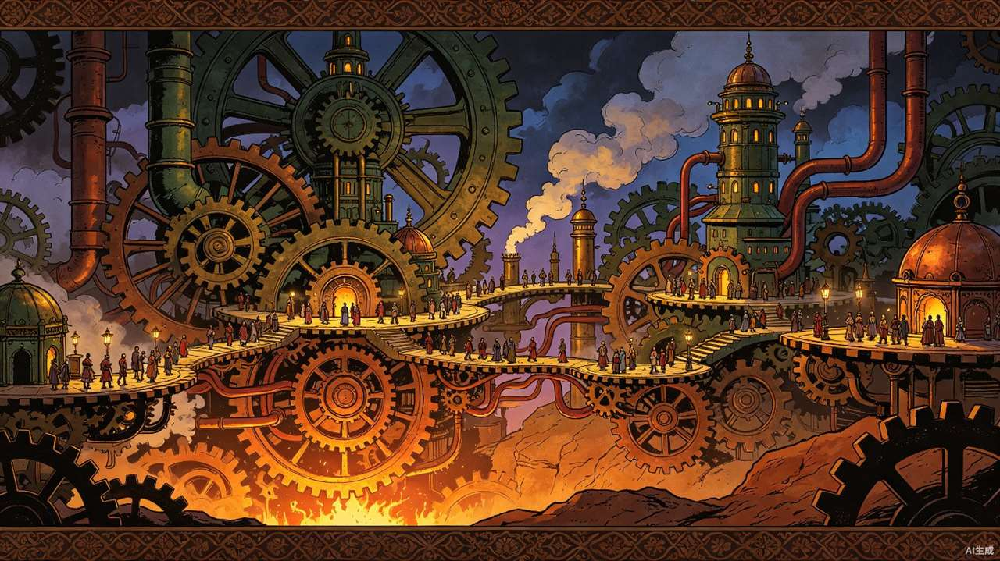
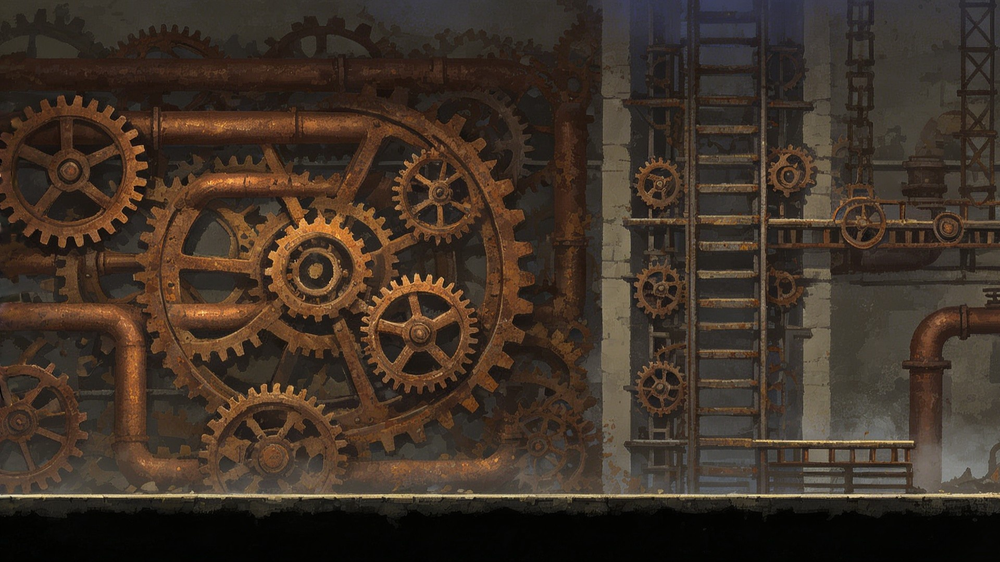
齿轮兵巡逻街道，蒸汽喷射器维护管道，铜锈蜘蛛在齿轮间隙清理碎屑。所有机械执行最后一条指令，日复一日。危机：过度抽取位面能量维持齿轮运转，导致位面结构破碎。
蒸汽神国实行齿轮等级制——公民的社会地位由他们维护的齿轮大小决定。锅炉祭司团位于顶端，他们负责维护中央齿轮——那颗驱动整个大陆的巨型齿轮。蒸汽骑士团是军事力量，他们的装甲由齿轮驱动，蒸汽喷射是武器。最底层是铜锈蜘蛛的操控者——他们在齿轮间隙清理碎屑，随时可能被碾碎。灾变前最后一个指令是"维护齿轮"——这个指令至今仍在执行，只是再也没有人知道为什么要维护了。
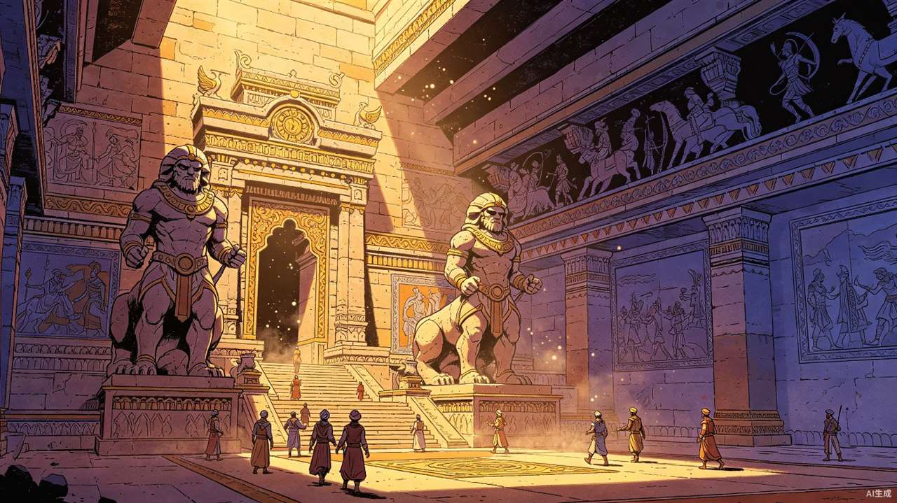
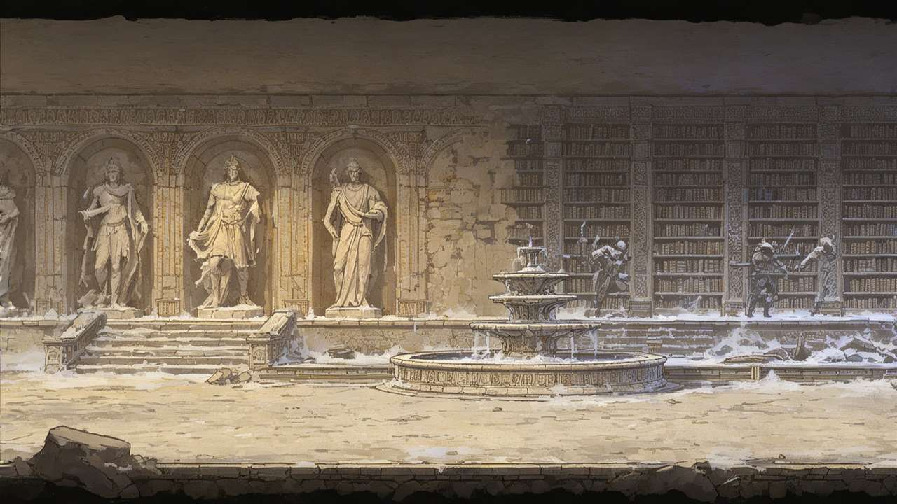
石化士兵守卫神殿，雕像弓手站岗城墙。时间缓流让一切缓慢而安详。危机：时间缓流失控，城市开始向"永恒静止"滑落。他们预见了灾变，开始准备最后的抵抗——全体石化。
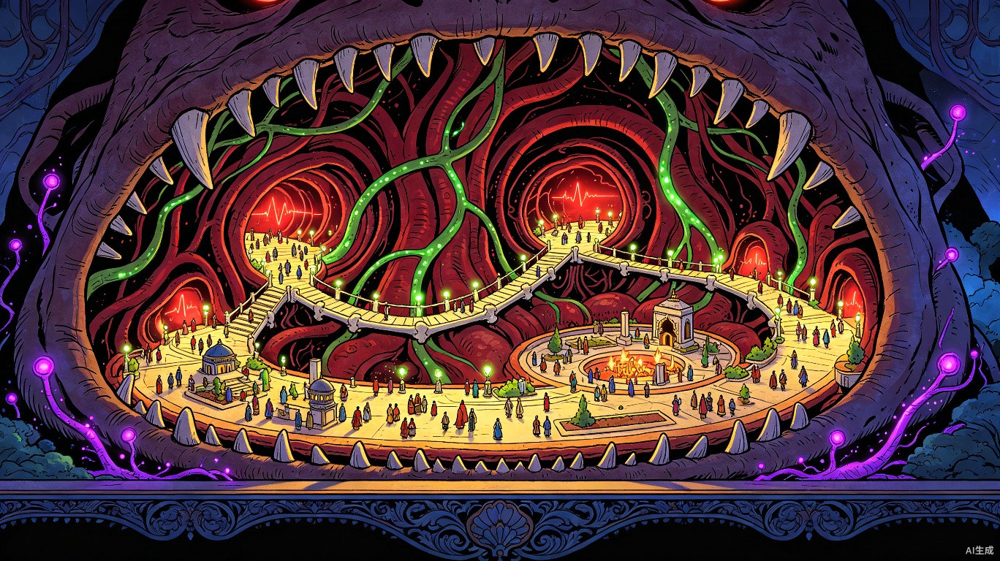
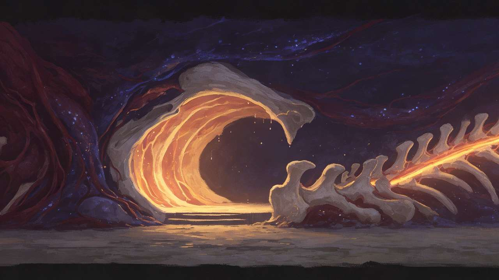
血细胞维持循环，血管蠕虫清理管道，免疫细胞抵御外侵。一切与巨兽共生。危机：巨兽开始衰弱，共生关系动摇。没有巨兽，活体文明将失去栖息地。
活体文明与巨兽的共生并非无条件。巨兽提供庇护，但作为交换，活体文明必须为巨兽提供意识——他们每天必须将一部分情感和记忆"喂"给巨兽。这种喂养是自愿的，因为巨兽的痛苦如果无人分担，巨兽会发狂，整个栖息地将被摧毁。活体文明的人天生就知道：他们的痛苦是巨兽的止痛药。他们中最敏锐的人——脉搏共鸣者——能直接感知巨兽的情绪，成为议会成员。
不是单一文明，而是无数平行世界的残片集合。半截城墙属于从未存在过的王国，一段铁路通向消失的终点，一座钟楼指针同时指向所有时间。裂隙兽在碎片间游荡，残影蝶飘过不存在的花园，裂隙射手在残墙上巡逻。它们都是残缺意识的自发凝聚。天然的"裂隙"吸引碎片不断碰撞重组，是 Roguelite 随机性的叙事根源。
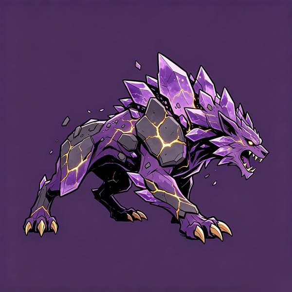
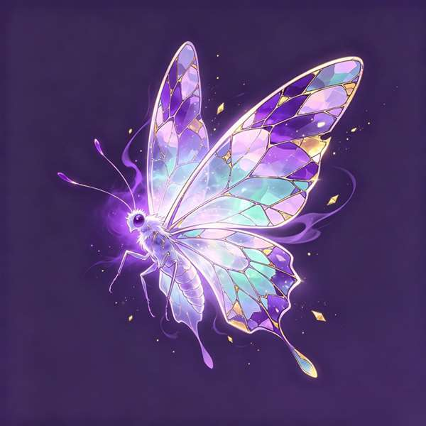
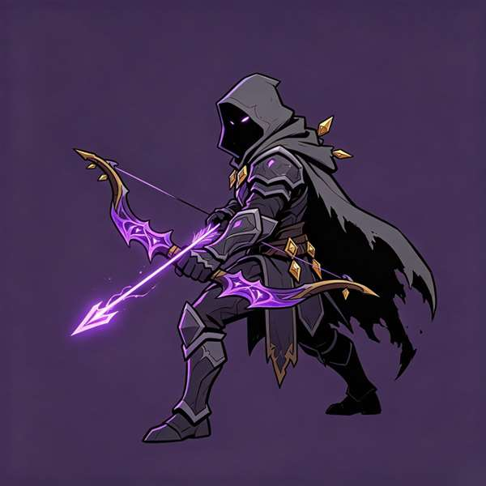
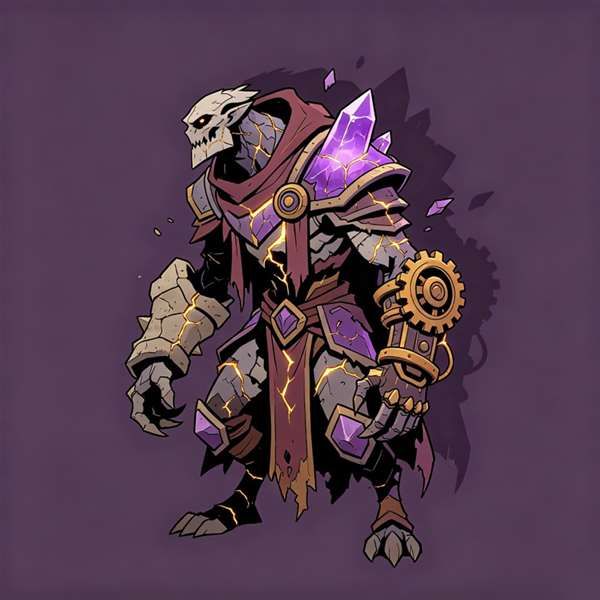
四个文明的碰撞与撕裂
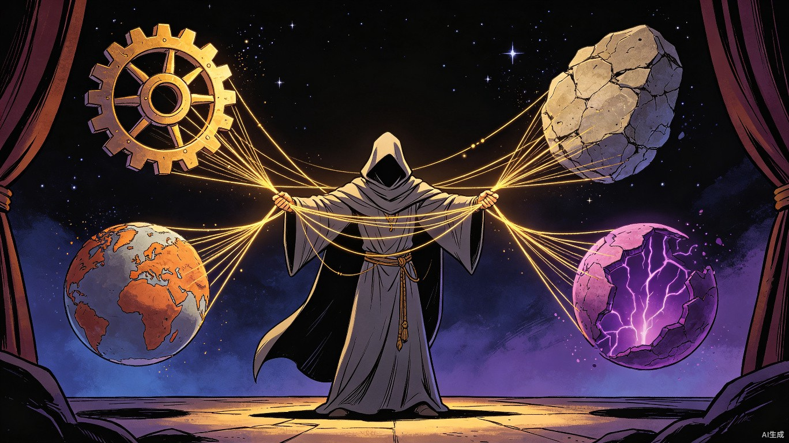
蒸汽的高温与石化的凝固互相排斥；活体的血肉与机械的齿轮矛盾。碎片开始剧烈震动。裂隙织者——一个由多种碎片自发融合的生命——在排斥中诞生又崩解，反复循环。
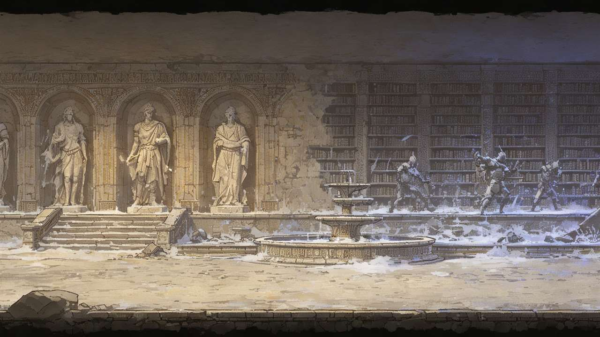
石化文明发动全体石化——在灾变前最后一秒，将整个文明凝固。石像保持灾变瞬间的姿态：拥抱的、奔逃的、祈祷的。一位教师张开双臂护住学生，永远凝固。
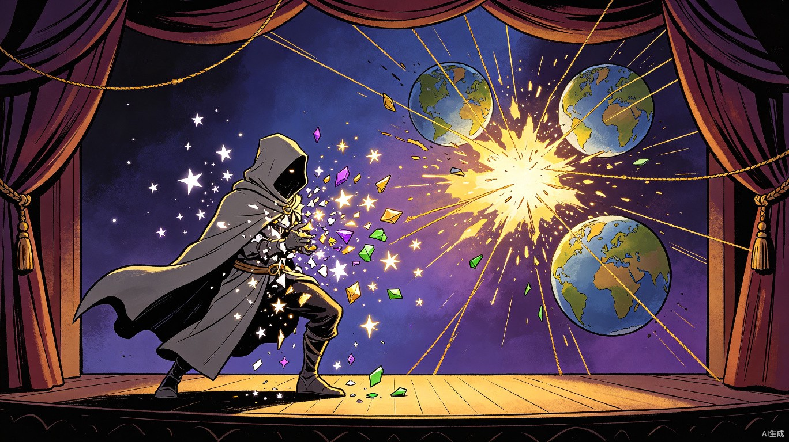
……我必须修复这一切。
四个文明被强行压入同一空间，形成四层折叠结构。所有文明的集体痛苦凝聚为一个巨大的心脏形态存在——巨兽。心脏因剧痛开始疯狂搏动。
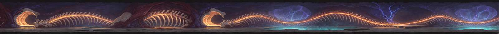
缝合师的身体被撕裂成88枚碎片，每一类碎片都有不同的功能。22枚主角碎片——散落在各层的关键节点，收集后可解锁技能，是主角"自愈"的方式。44枚世界碎片——最多最杂，改变基础能力（移动速度、攻击力、耐力等），散落在常规探索路径上。14枚NPC碎片——与NPC的好感度挂钩，获得被动特性，如编年者的碎片感知、守炉人的耐力回复。8枚隐藏碎片——改变游戏规则（如双跳、二段闪避、技能变异等），需要特殊条件才能发现。碎片的分布并非随机——它们散落的轨迹记录了缝合师被撕裂时的运动方向，像星辰的轨迹一样精确而美丽。
无数次的凝聚与消散
巨兽心脏首次搏动，折叠世界第一次重置。地表裂隙重新吐出碎片，机械齿轮回到初始位置，遗迹石像恢复灾变瞬间姿态，活体层血管重新泵血。
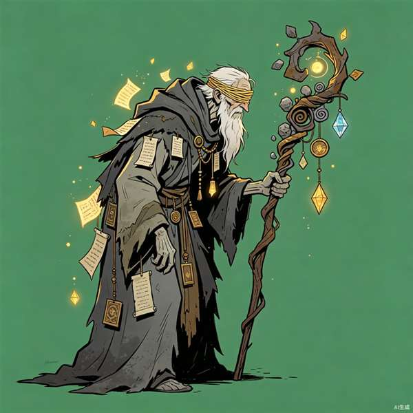
在地表层凝聚成形，他的右眼能看到所有平行世界的记忆。他开始记录一切，但记录也在被裂隙侵蚀。灰蓝色长袍，右眼紫色光洞不断闪烁平行世界画面。
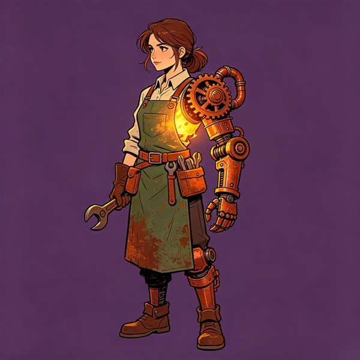
在机械层凝聚，半人半机械——她是锅炉祭司团最后的成员。她维护着齿轮，以为自己在"维持世界运转"。铜绿背心，右臂机械义肢，齿轮发饰缓慢转动。
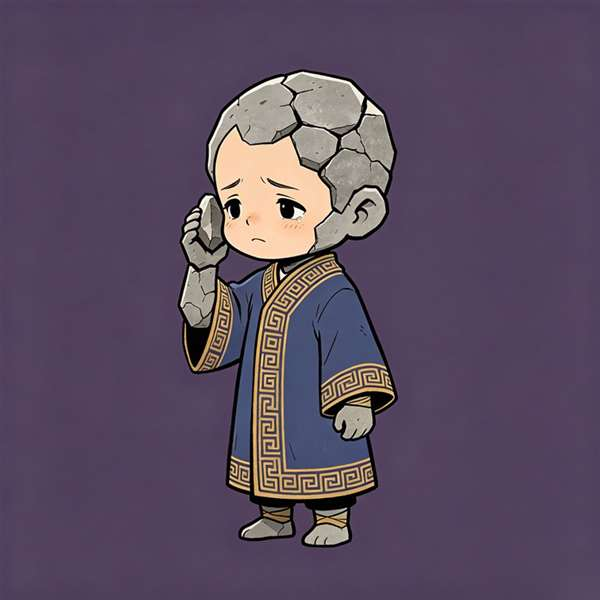
在遗迹层凝聚，石化文明最后的孩子。裂隙的偶然浸染让他保留了意识，能听到石化者们凝固在最后一瞬的想法。60%石化，双手变石，下颌被封住，只有眼睛是活的。
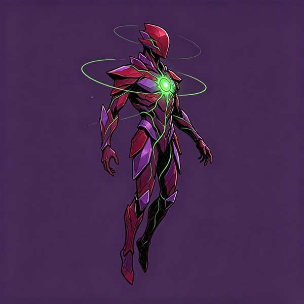
在活体层凝聚，巨兽意识试图与外界沟通的代言人。它传递的不是攻击意图，而是巨兽无法言说的痛苦。暗红血肉和荧光紫神经纤维编织成拟人形态。
各层碎片自行凝聚为残缺意识——地表的裂隙兽/残影蝶/裂隙射手，机械的齿轮兵/蒸汽喷射器/铜锈蜘蛛，遗迹的石化士兵/雕像弓手/记忆幽灵，活体的血细胞/血管蠕虫/免疫细胞，意识的记忆碎片/认知影/情绪投射体。它们本能地想要掠夺更多碎片来让自己完整。
碎片无数次尝试凝聚，无数次失败。每一次凝聚都不完整，性格不同，走向不同。无数个"另一个你"在意识层形成。
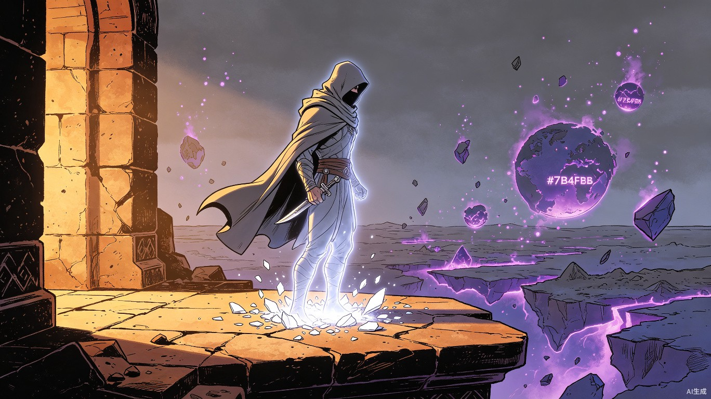
第1-2章 · 地表层 → 机械层
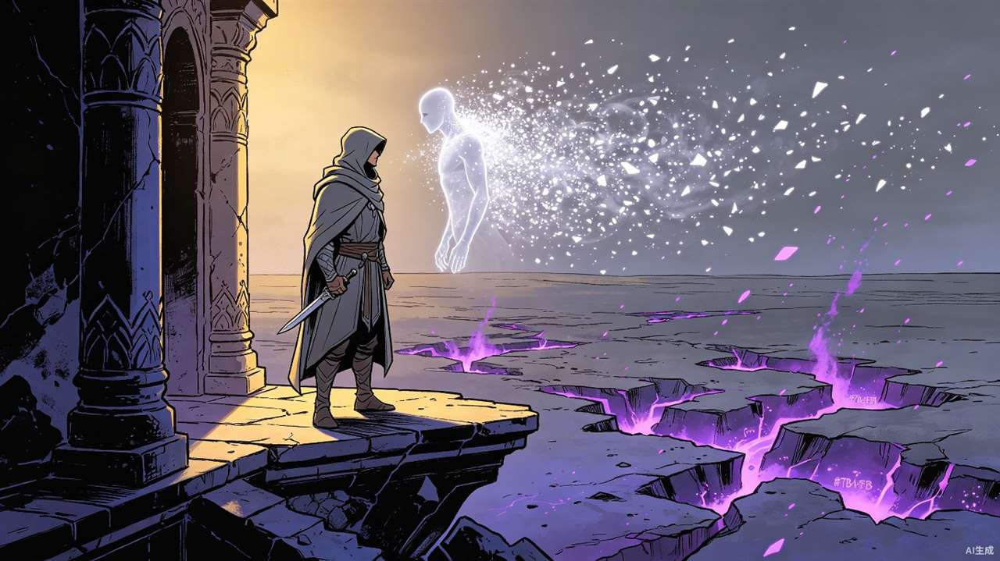
黑屏中传来心跳声。主角在地表废墟的碎片中凝聚成形——半透明的人形从碎片中凝聚，记忆全失。灰色斗篷，腰间短刃。碎裂黎明台上模糊的缝合师符文在光照下若隐若现。一个半透明白色人影首次出现，碎光微微旋转。
……你醒了。这次……你醒得比上次早。别怕。往下走，碎片在等你。
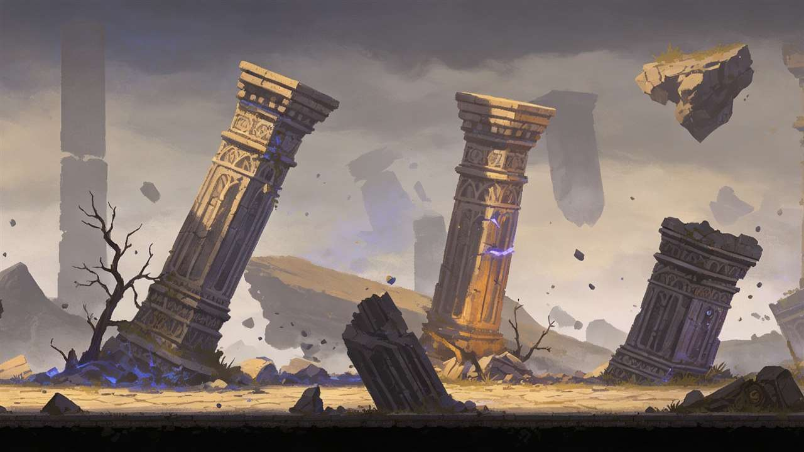
破碎旷野上，裂隙兽在碎片间游荡——它们是平行世界碎片凝聚的残缺意识。残影蝶飘过不存在的花园。裂隙射手在残墙上巡逻。主角第一次握刀战斗，白色碎光的攻击特效。
两侧墙壁不断闪现不同平行世界的片段影像——从未存在过的王国、已经消失的帝国、只存在于可能性中的世界。裂隙不断吞吐新的残影。
佝偻老者盘腿坐在悬浮碎片上，右眼紫色光洞不断闪烁平行世界画面。他翻动无字书，空白页面浮现记忆影像。
又一个旅人。不……不太一样。你的左眼……算了。你来得正好——我的右眼已经三天没停过了，全是齿轮的画面。
多材质缝合体——半石半金属半血肉半紫光。它能影分身分裂又合体。这是Boss机制的预告——碎片护盾与残影分身。
前面有个东西……在捡碎片。
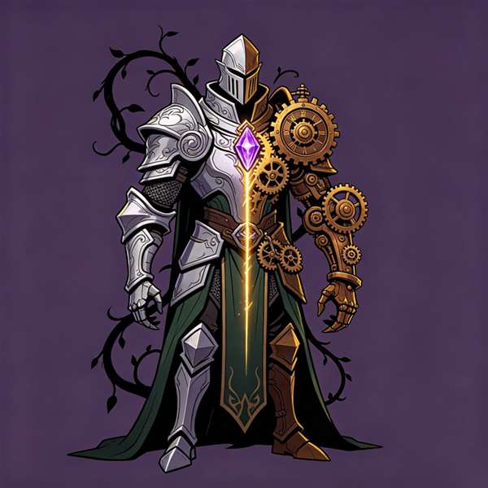
裂隙织者不是天生的怪物。它是缝合日中，四个文明的碎片在排斥力中自发尝试融合的生命体之一。它成功了一半——半边骑士铠甲来自石化文明，半边机械臂来自蒸汽神国，背后的藤蔓来自活体文明的血管变异，紫光来自裂隙世界。它比任何人都更接近"缝合"，但它失败了。它的身体无法稳定，不断崩解又重组。它在每一轮轮回中都会重新凝聚，试图拼回自己。它不是在攻击主角——它是在争夺碎片，因为碎片能让它再稳定一秒。
这些碎片曾经也是完整的生命……和你一样。在我的右眼里，它已经碎过很多次了。每一次都是一个旅人打碎的。但每次它都会重新凝聚。它不是在攻击你，它在……试图拼回自己。就像你一样。
折叠边境——裂隙被巨大齿轮"咬合"住，向下延伸。
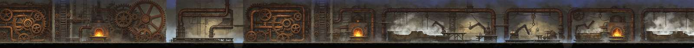
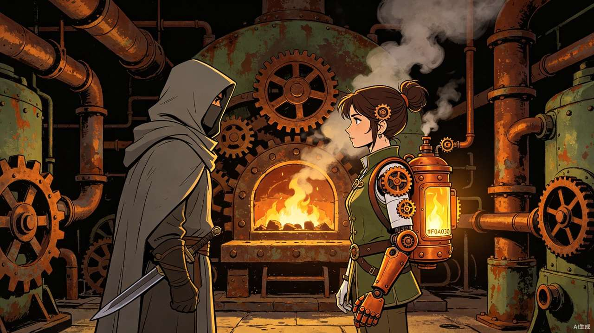
半人半机械少女在锈蚀锅炉房中维护齿轮。左臂人类手臂苍白纤细，右臂机械义肢铜色齿轮。背部锅炉火焰黄光透出。头顶齿轮发饰缓慢转动。
站住。你是谁——不，先别动。你身上……有裂隙的味道。齿轮不喜欢裂隙。
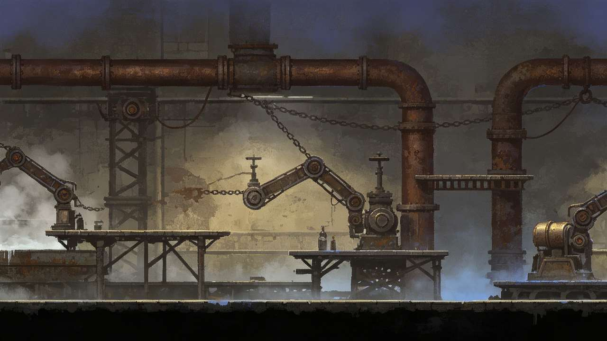
巨型齿轮转动时结构确实更稳定。齿轮兵巡逻，蒸汽喷射器维护管道，铜锈蜘蛛在齿轮间隙清理。守炉人相信齿轮在维持世界运转。这是红鲱鱼——齿轮在抽取能量而非维持世界。
齿轮不会说谎。
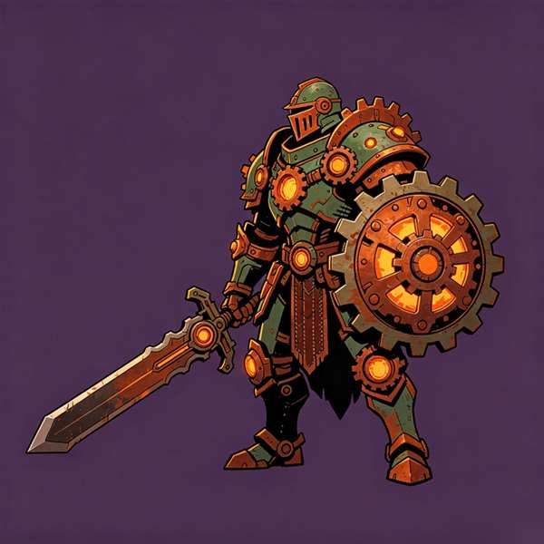
装甲齿轮士兵，护甲3阶段破碎（完整→裂纹→破碎）。齿轮飞虫在空中盘旋，蒸汽冲压机重重踏地。
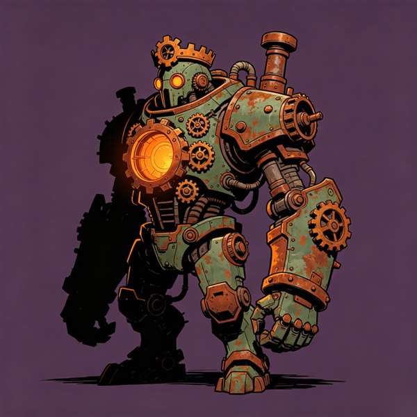
齿轮暴君不是普通的失控机械。它是蒸汽神国最后的战争兵器——原本设计用来抵御位面破碎。灾变后，齿轮锚点网络反转为抽取装置，齿轮暴君被抽取核心强行驱动，变成了抽取系统的"泵站"。它的核心不再是蒸汽神国的火焰，而是巨兽的生命力——暗红色的脉动能量直接从活体层泵入。守炉人试图阻止过载被弹开的那一刻，她看到的不仅是齿轮加速，而是齿轮内部那条通向深处的管道第一次暴露在她眼前。
齿轮……不会说谎。但也许……我从来没有听懂过它们在说什么。
齿轮大厅深处，暗橙色脉动管道汇聚向下——能量从齿轮层单向流向未知深处。无回流管道。守炉人丢弃的维护工具散落在地。
第3-4章 · 遗迹层 → 真相

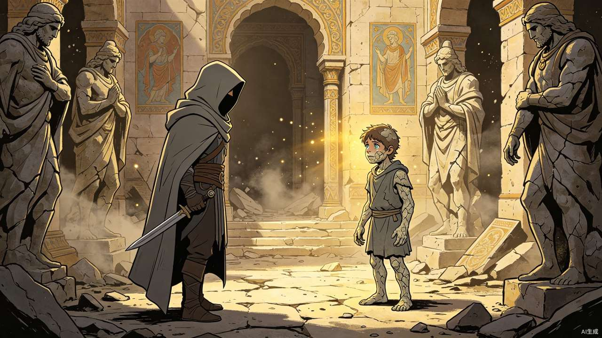
1.3m 孩童，60% 石化，双手完全变石，下颌被封住。只有眼睛是活的——清澈、会流泪。走路一瘸一拐（右脚石化）。石化共鸣直接在脑中响起，双手石壳微微发光时间金。
你踩到他了。脚下那个……他最后想的是'种子还没种完'。他是个农夫。
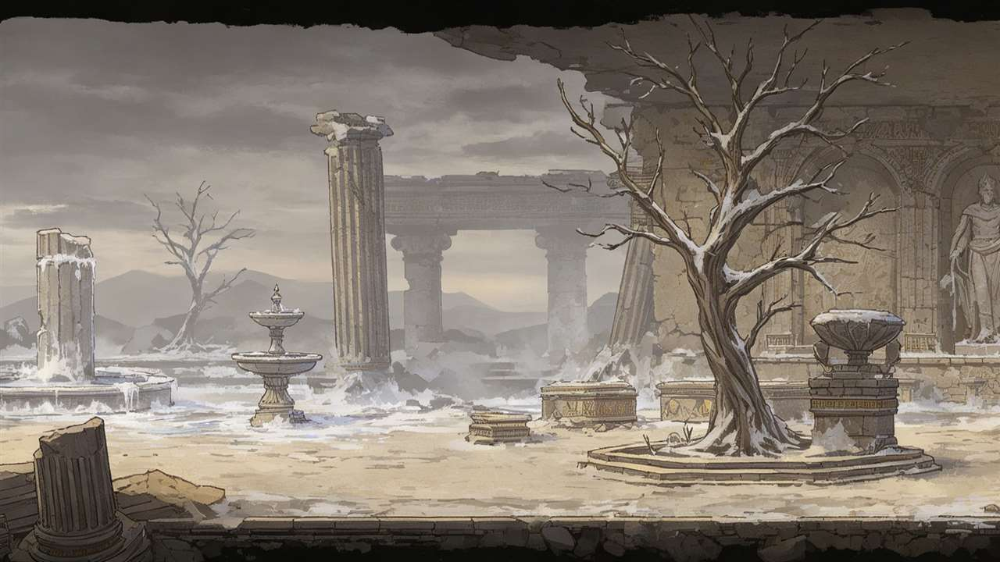
整个广场的石化者保持灾变瞬间姿态——拥抱的石像、奔逃的残躯、跪地祈祷者。石语者走到每个石像前"读"出他们最后的想法。石像眼球偶尔微动，注视主角——意识被困在石中。
墙上壁画记录石化文明完整历史，越深越完整。最深处的壁画记录了灾变前最后一刻——全体石化的仪式。石语者在墙壁上刻满石像的"遗言"。
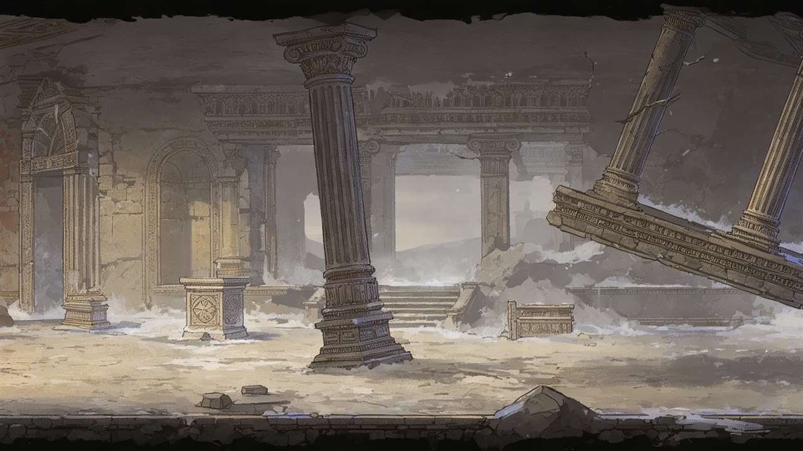
指针逆行的钟楼。钟摆逆时针摆动，钟面数字反向。时间倒流现象的源头与象征。
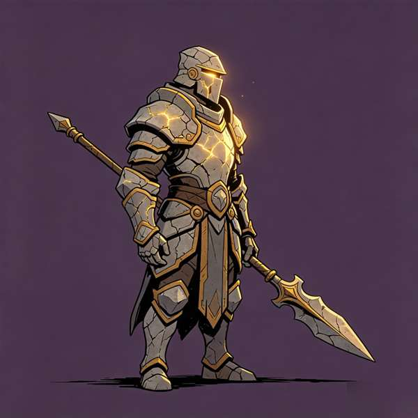
石化战士，石壳3态（完整/裂纹/破碎）。石化凝视者能短暂定身主角，石屑蜂群是被风化的石像碎片。
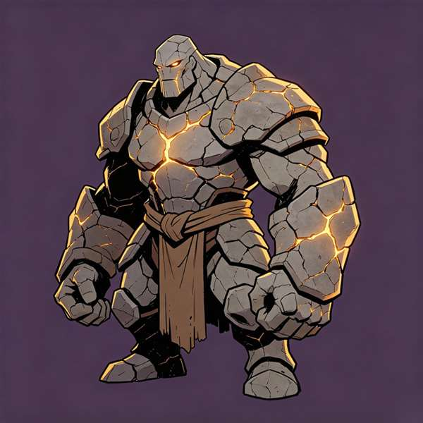
解冻者原名已不可考，他是石化文明的一名教师。灾变来临时，他在教室里。他的学生们——七个小孩子——被时间缓流失控困在原地。他做了石化文明最后的仪式：张开双臂，用自己的身体挡住灾变的冲击波，将石化之力集中在自己身上，以自己为盾保护学生。学生们的石化比他晚了一秒——那一秒，他的石化之力为他们争取到了更浅的石化深度。在Boss战的第三阶段，石壳完全剥落后，你能看到他最后的姿态：双臂张开，面带微笑，朝向身后七个浅石化的小石像。他化为沙尘时问的不是"为什么"，而是"他们还好吗"——因为他至死都不知道，学生们也石化了。
齿轮不是在维持世界，而是在抽取能量。
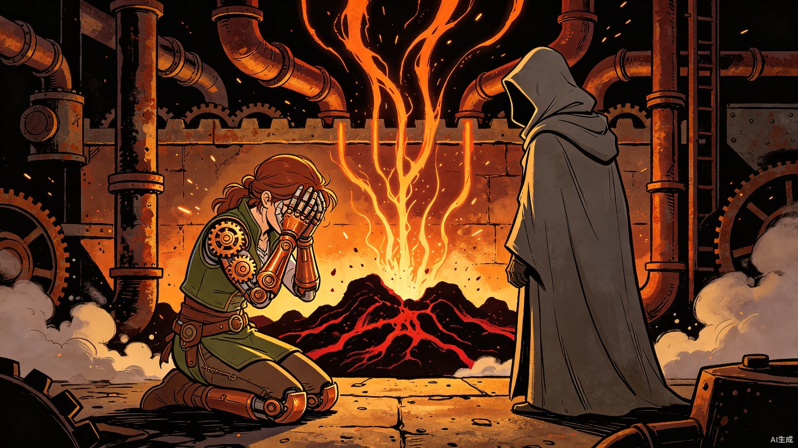
这些管道……往下走？通到……不。不不不不。齿轮不是在运转世界。齿轮在——我在帮它抽血？我维护了这么多年……我在帮它抽血？
守炉人面临选择——继续维护齿轮（维持脆弱平衡）还是停止齿轮（加速崩塌）。齿轮断裂崩塌，层间通道坍塌。主角在崩塌中穿行——平台跳跃、选择决断、穿墙裂隙。
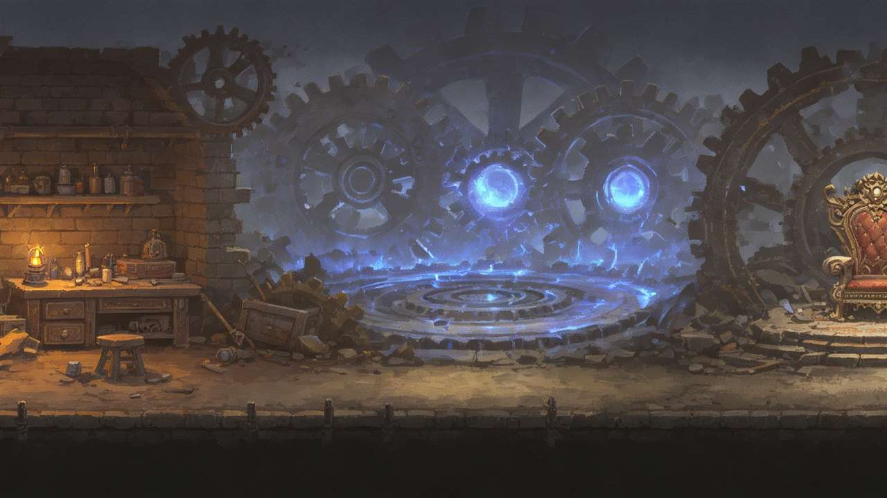
我会看着它。直到……直到我弄清楚该怎么做。
第5-6章 · 活体层 → 意识层
血细胞维持循环，血管蠕虫清理管道，免疫细胞抵御外侵。它们不是敌人——它们是巨兽的免疫系统在排斥入侵者。当巨兽心跳骤停的短暂窗口，所有活体敌人陷入静止。
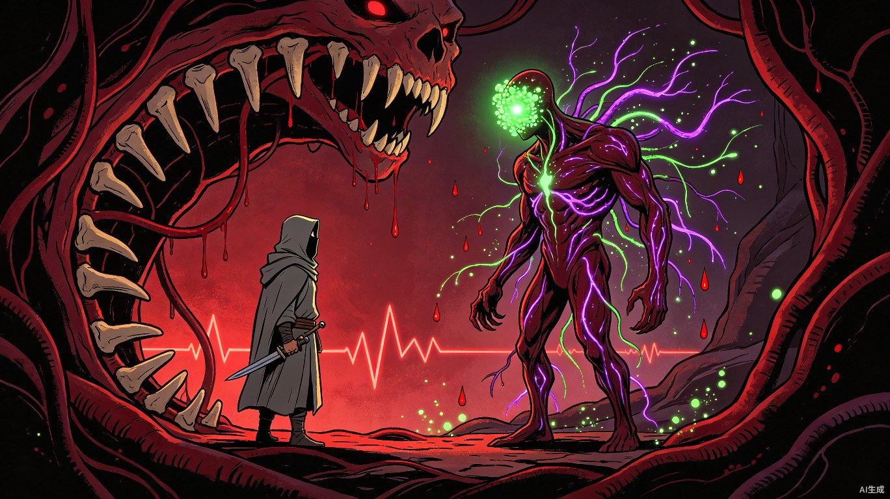
2m 拟人形态，暗红血肉和荧光紫神经纤维。面部搏动光团（平静时荧光绿，痛苦时荧光紫）。全身血肉按音节搏动——每个字都是一次"心跳"。
痛。你……也痛。你身上有……外面的味道。你从外面来。外面……也痛吗？
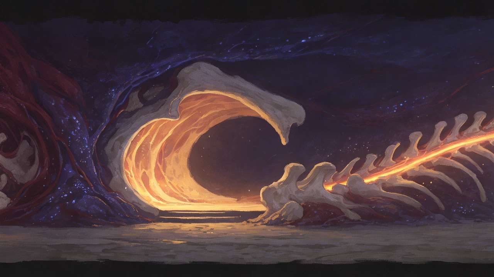
巨兽肋骨形成的巨大桥梁，跨越下方翻涌的器官迷宫。血管隧道中荧光绿液体流动，血流方向随心跳节奏变化——天然的移动平台。
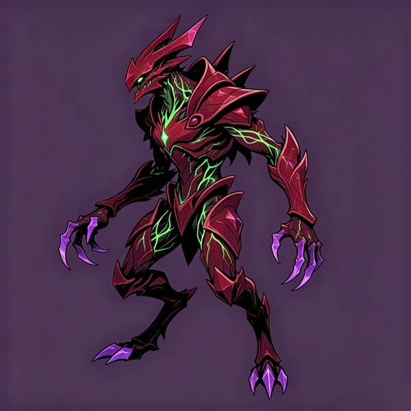
巡逻血细胞变体，心跳加速时狂暴。心肌纤维在心跳节奏中收缩扩张。血小板凝块阻挡通道。
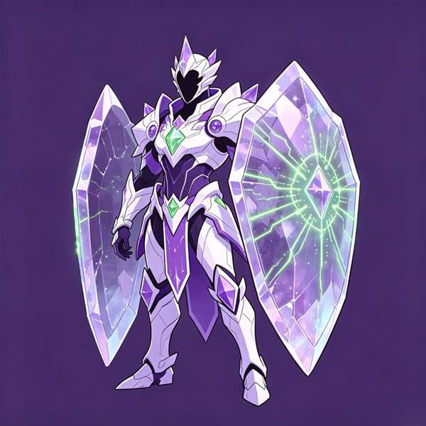
它……只是害怕。像巨兽一样。它们都在害怕。
免疫之墙不是恶意的攻击者。它是巨兽的免疫系统——白细胞变体，本能地排斥入侵者。但它的第三阶段拟态成主角样貌，并非识别主角为"敌人"，而是巨兽的创伤应激反应。缝合日那天，缝合师撕裂自己时，巨兽承受了最剧烈的痛苦。那份痛苦刻在了巨兽的每一个细胞中。当免疫系统面对一个携带缝合师碎片的存在时，它"回忆"起了那份痛苦，以为主角就是撕裂者。它在恐惧，不是在攻击——就像一个被烧伤过的人看到火焰时会本能退缩一样。
意识层——碎片星空，无数记忆碎片悬浮如星辰。

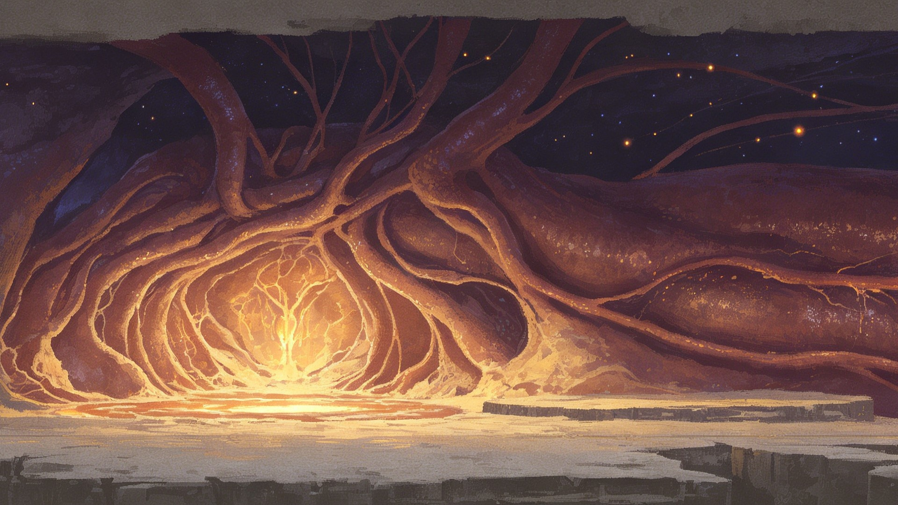
碎片墙面闪现不同文明的真实记忆——蒸汽神国鼎盛、石化文明仪式、活体文明共生、裂隙世界碰撞。每段碎片都是一个文明的真实记忆。
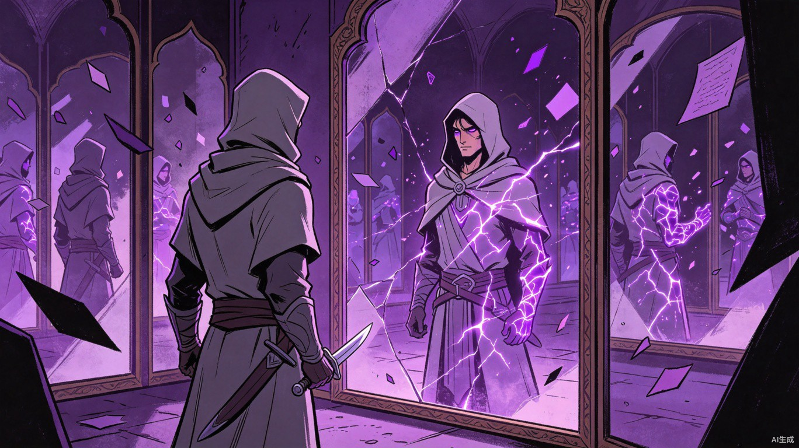
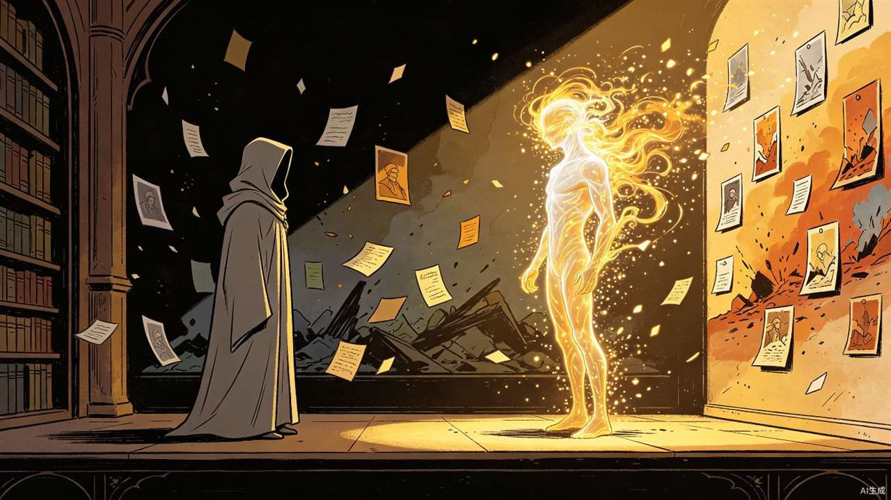
我就是缝合师。
回声不是独立的灵魂，不是平行世界的投影，不是巨兽的意识碎片。它是缝合师被撕裂前最后一个念头——"我必须修复这一切"——这个念头在88枚碎片散入坍缩空间时，因为过于强烈而凝聚成了独立的意识体。它比主角更早"醒"来。它见证了每一次轮回——每一次主角碎片凝聚、探索、失败、消散。它记得所有轮回中主角做过的一切选择，承受过的一切痛苦。它从不干预，只是引导——因为它知道，干预会让主角失去"自主"的可能性。它的碎光在平静时微微旋转，在恐惧时收缩，在真相揭露后转为暖金色——那是缝合师原本的颜色，是记忆回归的标志。
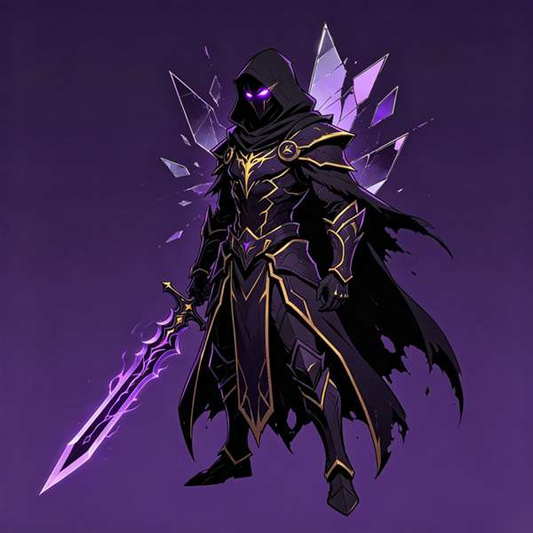
也许下一次轮回，你能拼出一个完整的答案。
缝合师残影不是敌人，甚至不是Boss——它是一面镜子。它使用玩家当前周目从未使用过的技能组合，迫使玩家跳出舒适区。这是叙事层面的隐喻：缝合师曾拥有所有88枚碎片的能力，但每次轮回只用了一部分。残影展示的是"未选择的路"。它的第三阶段"犹豫态"——动作变慢、攻击间隔拉长——不是程序设计的难度曲线，而是残影在犹豫：它是否应该继续战斗？如果它赢了，轮回会重置，一切重新开始。如果它输了，主角会继续前进，面对更大的真相。它在犹豫是否应该让主角"知道"。最终它选择消散，留下一句话："也许下一次轮回，你能拼出一个完整的答案。"——它知道这次轮回不一样了。
真相揭露后，回声语气从引导变为平等，开始使用"我们"而非"你"。色调从半透明白色转为暖金 #E8C547。
第7-8章 · 最后巡礼 → 终局
守炉人站在齿轮旁，机械义肢微微发光。她的人格弧光完成——从"蒙蔽"到"清醒"。
齿轮还在转——但这次我知道它在抽什么了。我会看着它。
守炉人的人格弧光经历了三个阶段：第2章"蒙蔽"——她真诚相信齿轮在维持世界，维护齿轮是她的使命和信仰；第4章"撕裂"——真相揭露后她的信仰崩塌，"齿轮不会说谎"变成了"也许我从来没有听懂过它们在说什么"；第7章"转变"——她不再维护齿轮，但也没有停止看守。她站在齿轮旁，看着能量继续向下流，选择"看着它，直到弄清楚该怎么做"。她没有修复齿轮，也没有破坏齿轮——她选择了观察和理解。这是她从"执行者"到"思考者"的转变。齿轮还在转，但这次她知道它在抽什么了。
石语者走到最后一个石像前——是他自己。他快读完了……快变成他们一样了。他的石化已经蔓延到胸口。
我快读完了……快变成他们一样了。但在那之前——你帮我读最后一个。你。
石语者的人格弧光是一个缓慢消失的过程。他是石化文明最后的孩子——裂隙的偶然浸染让他保留了意识，但石化仍在蔓延。第3章相遇时，他60%石化——双手、右脚、下颌已变石。他能听到石化者凝固在最后一瞬的想法，在墙壁上刻满他们的遗言。第7章最后巡礼时，石化已蔓延到胸口。他走到最后一个石像前——是他自己。他快"读完了"——快变成他们一样了。他的最后一句话不是关于自己，而是关于主角："你帮我读最后一个。你。"——他想在完全石化前，让主角帮他"读"出他自己最后的想法。他不知道自己最后想的是什么。也许是一个名字。也许是一声笑。也许什么都没有。
编年者翻动无字书，最后一页空白。他的右眼光洞终于停止闪烁——所有平行世界的记忆终于完整。
我看过这么多轮回……只有你走到了这里。
脉搏的搏动变得平静，荧光绿光团稳定。巨兽的心跳在主角靠近时变得平缓。
你……听到了。你听到了我的痛。没有人……听过。谢谢。
巨兽不是敌人，是所有世界的痛。
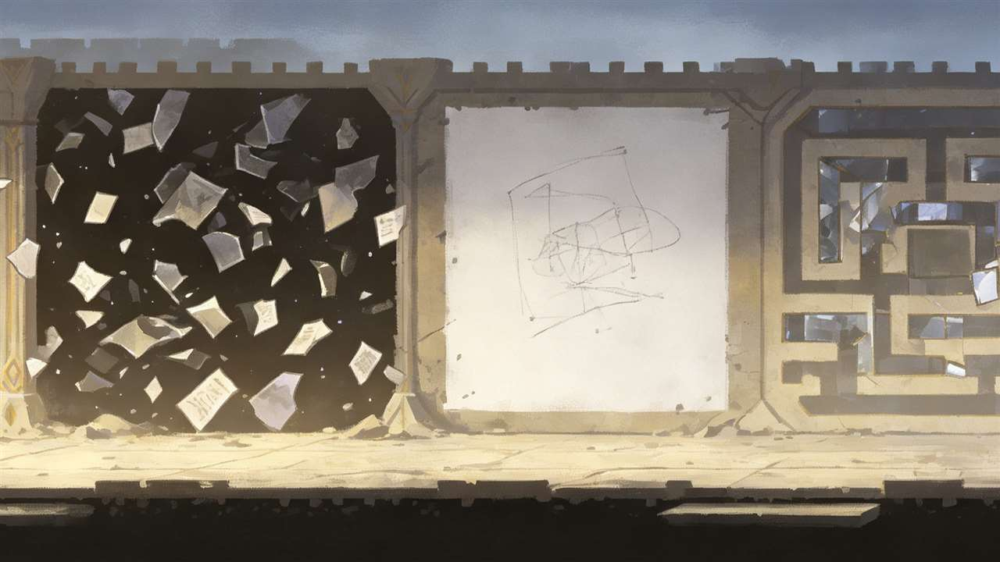
万物之心——意识层最深处。
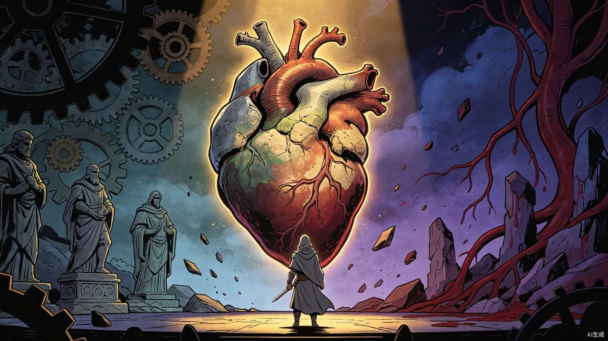
巨兽不是怪物，不是敌人，不是Boss。它是一颗心脏。四个文明的集体痛苦——蒸汽神国的齿轮碾压、石化文明的永恒凝固、活体文明的共生撕裂、裂隙世界的无限碰撞——在缝合日那天凝聚成了一个巨大的心脏形态存在。它因疼痛而疯狂跳动，每一次搏动都驱动着轮回的重置。它不知道自己是什么。它只知道痛。它的心跳越快，世界越不稳定；它的心跳骤停，一切凝固。主角的目标不是杀死巨兽——那意味着所有折叠世界崩溃。主角的目标是让巨兽的痛苦得以平息：通过正确缝合碎片，或让被折叠的文明得到解脱。终局对话中，巨兽核心意识第一次开口说话："我……是什么？"——它不知道自己是痛苦的集合体，不知道自己的心跳在驱动轮回，不知道有人来帮它了。
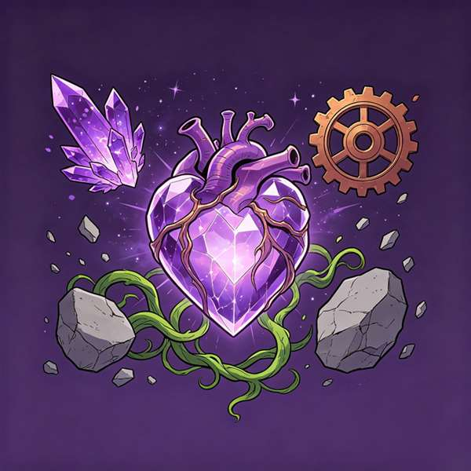
巨兽核心意识不知道自己是什么。它只是一颗因疼痛而疯狂跳动的心。主角的回答决定结局走向：分离 / 共存 / 虚无。
碎片数 · 性格值 · 选择 → 五种终局
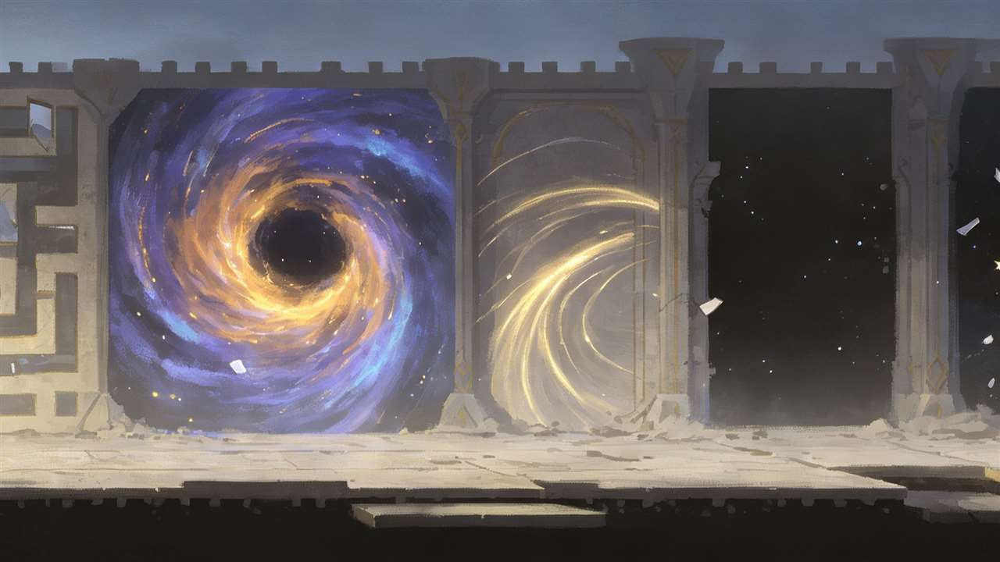
主角选择遗忘，轮回继续。主角身体化为碎片飞向四方，记忆消散。回声："又一次。但没关系。我会再等。"碎光静止。黑屏。心跳声再次响起。
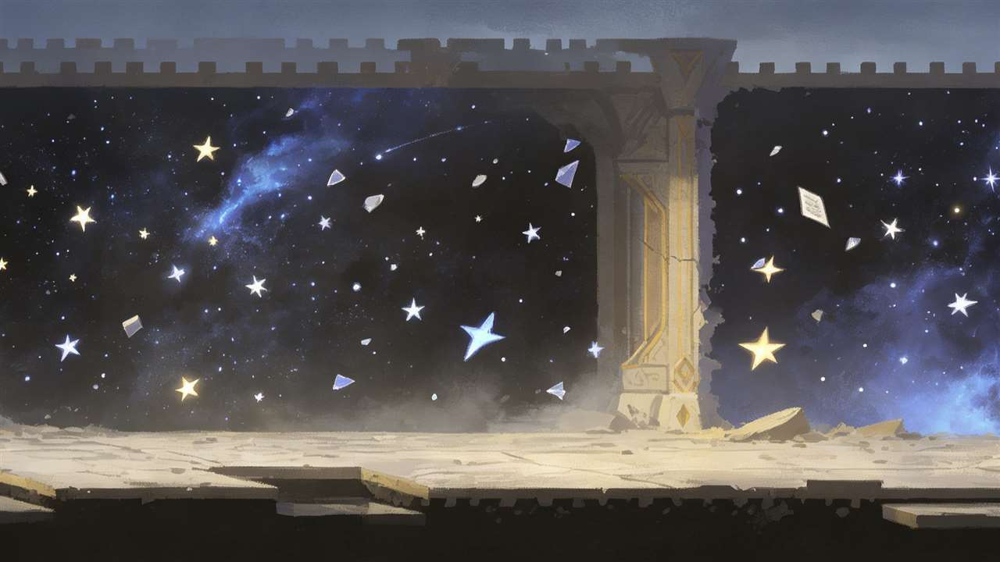
碎片不足，暂时平息巨兽痛苦。裂隙暂时缩小但未消失。编年者："不稳定。画面还在变。"右眼继续闪烁。
彻底分离所有世界。主角身体化为碎片飞向四方。守炉人齿轮停止，微笑。石语者石化停止，终于安静。编年者合上书。脉搏消散。
不痛了。第一次……不痛了。
——右眼流出裂隙紫色的光泪。他第一次入睡。
裂隙化为桥梁连接四层世界。巨兽化为守护力量。四层世界和谐共存。
我不再只是回声了。我们……是完整的了。
一切化为黑色尘埃消失。纯黑虚空中只剩主角消散的轮廓。无台词。无音乐。只有沉默。
设计哲学与轮回收束
「锈蚀深渊」的叙事核心是"痛与缝合"。四个文明的痛苦凝聚为巨兽，缝合师的使命是修复这一切。但"修复"不一定是"分离"——也可以是"共存"。游戏不评判玩家的选择，只呈现选择的后果。每一次轮回都是一次尝试，每一次结局都是一种答案。
无论选择哪个结局，轮回都不会真正结束。分离后世界可能再次碰撞，共存后平衡可能再次打破，虚无后虚无可能再次凝聚。但每一次轮回，碎片都会更接近完整。也许有一天，会有人拼出完整的答案。
当世界碎裂，谁来缝合？
也许答案从来不是"缝合"，而是"接受破碎"。